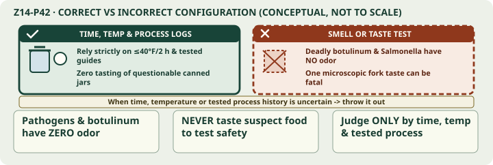

Z14-P42 · Food production and preservation · New manuscript
Reject the smell or taste test for spoiled or temperature-abused food
Prevent severe foodborne illness and fatal botulism by relying strictly on time, temperature, and tested process records rather than human senses.
When it applies · Evaluating outage-warmed leftovers, questionable home-canned jars, or unrefrigerated perishables.
Equipment · Appliance/food thermometers, outage log, and tested canning records.

Actions
- Understand the biological distinction between spoilage microbes (which make food look slimy, moldy, or sour) and pathogenic bacteria/toxins (Salmonella, E. coli, Listeria, Clostridium botulinum)—deadly pathogens often produce ZERO visible mold, ZERO cloudiness, and ZERO bad odor.[F04, P10]
- NEVER taste a suspect home-canned jar, swollen can, or temperature-abused perishable food "just to see if it's still good"—a microscopic taste of botulinum toxin can be fatal within hours.[P10, F04]
- Base every keep-or-discard decision strictly on objective history: verified ≤40°F cold chain, ≤2-hour ambient exposure, and intact USDA/NCHFP tested preservation records.[F03, F04, P06]
Failure recognition · Taking a tiny fork taste from an unsealed home-canned green bean jar because the liquid looks clear and smells completely normal.[P10]
Verify · Confirm zero tasting of questionable foods and objective time/temperature/process records govern every keep decision.[F04, P10]
Stop or change course · Any missing time-temperature history, unvalidated low-acid canning recipe, or broken seal requires immediate safe discard without tasting.[F04, P10]
Evidence and editorial notes
- F03 · USDA / FDA / CDC · Four Steps to Food Safety (current web edition)
- Section: Chill > Refrigerate promptly · Conditions: Perishable food outside temperature control
Support: Refrigerate within two hours, or within one hour above 90°F.
Limitations: Ambient temperature spikes shorten safe holding windows. · Conflicting evidence: None; retained for food safety pack completeness.
Editorial note: Maintains five-pack integrity. · Specialist reviewer: Food safety and public health
Primary source · checked 2026-11-24 - F04 · USDA / FDA / CDC · Food Safety During Power Outage (current web edition)
- Section: Refrigerated food and power outages · Conditions: Refrigerator starts cold; keep door closed
Support: An unopened refrigerator keeps food cold for about four hours. Follow the per-item discard chart after loss of temperature control. Never taste to test.
Limitations: Door openings accelerate warming; appliance thermometer is needed to verify temperature. · Conflicting evidence: None; retained for Z15 reconstruction.
Editorial note: Maintains five-pack integrity. · Specialist reviewer: Food safety and household preparedness
Primary source · checked 2026-11-24 - P06 · USDA / NCHFP · USDA Complete Guide to Home Canning (2015 / current NCHFP edition)
- Section: Complete Guide to Home Canning > Principle of Tested Protocols · Conditions: All residential home canning (boiling-water and pressure canning)
Support: Treat every USDA/NCHFP tested canning recipe as a single indivisible system: food pH, piece size, liquid viscosity, jar size, headspace, processing method, pressure/temperature, time, and altitude adjustment must all match the tested protocol.
Limitations: Adding extra starch, flour, oil, fats, or altering acid/low-acid ratios slows heat penetration and can cause lethal botulism. · Conflicting evidence: Directly prohibits online untested shortcuts and heirloom recipe alterations.
Editorial note: Foundational system-integrity rule across all Z14 canning cards. · Specialist reviewer: Food preservation process authority and Extension
Primary source · checked 2026-11-24 - P10 · NCHFP · Identifying and Handling Spoiled Canned Food (current web edition)
- Section: Identifying and Handling Spoiled Canned Food > Botulism Detoxification · Conditions: Suspected unsealed, bulging, spurting, foamy, moldy, or improperly processed home-canned jars
Support: Never taste suspect home-canned food—botulinum toxin is odorless and tasteless; check every seal before opening, discard unsealed jars promptly after processing (or refrigerate/reprocess within 24 hours per NCHFP rules), and follow official NCHFP detoxification/disposal steps for suspect low-acid jars.
Limitations: Simple visual clarity or normal smell never proves an untested low-acid jar is free of botulinum toxin. · Conflicting evidence: None; mandatory high-consequence food-safety stop condition.
Editorial note: Anchors spoilage inspection and safe disposal in Z14. · Specialist reviewer: Food microbiology and public health
Primary source · checked 2026-11-24
Source lineage · USDA/FDA/CDC FoodSafety.gov and NCHFP; new manuscript · Classification · New manuscript.